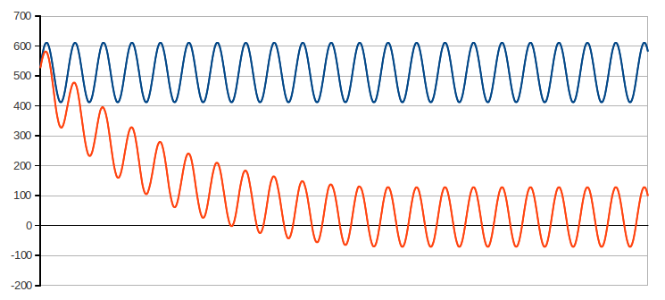

Hi
i have a question: what is 1024 in code:
//--------------------------------------------------------------------------------------
double EnergyMonitor::calcIrms(unsigned int Number_of_Samples)
{
#if defined emonTxV3
int SupplyVoltage=3300;
#else
int SupplyVoltage = readVcc();
#endif
for (unsigned int n = 0; n < Number_of_Samples; n++)
{
sampleI = analogRead(inPinI);
// Digital low pass filter extracts the 2.5 V or 1.65 V dc offset,
// then subtract this - signal is now centered on 0 counts.
offsetI = (offsetI + (sampleI-offsetI)/1024);
filteredI = sampleI - offsetI;
// Root-mean-square method current
// 1) square current values
sqI = filteredI * filteredI;
// 2) sum
sumI += sqI;
}
double I_RATIO = ICAL *((SupplyVoltage/1000.0) / (ADC_COUNTS));
Irms = I_RATIO * sqrt(sumI / Number_of_Samples);
//Reset accumulators
sumI = 0;
//--------------------------------------------------------------------------------------
return Irms;
}
why 1024 ?
Thankyou
Re: why value 1024 in code [offsetI = (offsetI + (sampleI-offsetI)/1024);]
"why 1024 ?"
Why not? It's a handy number that gives a suitable time constant. Look up digital filters in your favourite search engine for more details. It is likely that the compiler will translate this into
(sampleI-offsetI) >> 10
which is a simple and fast operation.
Re: why value 1024 in code [offsetI = (offsetI + (sampleI-offsetI)/1024);]
Aren't at least some of those variables floating point? In which case won't it all get promoted to floating point, including the divide?
Re: why value 1024 in code [offsetI = (offsetI + (sampleI-offsetI)/1024);]
Maybe it's likely it won't. I hadn't woken up properly when I wrote that.
Re: why value 1024 in code [offsetI = (offsetI + (sampleI-offsetI)/1024);]
It looks like it produces a floating point multiply of 0x3a800000 (1 x 2^-10):
By comparison, if you change the 1024 to a 1023, it produces a floating point divide of 0x447fc000 (1.998046875 x 2^9):
which takes about 21 usecs longer. So the reasoning is sound. Even in floating-point land, dividing by a power of 2 is much better than dividing by something that's not.
Re: why value 1024 in code [offsetI = (offsetI + (sampleI-offsetI)/1024);]
Well, you live and learn. Intuitively, it felt right as I wanted a number near to that - maybe I had the conversion to integer maths at some future time in the back of my mind when I did it.
Re: why value 1024 in code [offsetI = (offsetI + (sampleI-offsetI)/1024);]
I think what we're seeing above in those two code snippets is an example of the floating point constant folding dilemma that cross-compiler writers need to be concerned with. The compiler was happy to manipulate the "/1024" into a multiply but stayed well away from doing anything clever with a "/1023".
One of the golden rules of cross-compiler design is that the target should behave exactly the same regardless of whether you ran the compiler on an i7, an ARM, a PowerPC, a MIPS etc. But all of those architectures will do floating point slightly differently, with different precisions etc. 1024 can be perfectly represented in floating point as 1.x 2^-10. It has a mantissa of precisely 1 (note all the zeroes in 0x3a800000 above), so the compiler can confidently fold that without any fear of changing the target behaviour (just like it regularly does with integer constants).
To do something similar with 1023, the compiler would have to have much more intimate knowledge of not only how the target does floating point, but also how the machine its running on does floating point, to ensure any folding it was about to do at compile time would produce exactly the same result as if it had left the target to do it.
gcc actually defines a bunch of macro templates to that end. When you're porting gcc to a new target architecture you can optionally fill out those macros. If you do, gcc will use your macros when it's folding floating point constants, and your macros can do floating point precisely the same way your target does. If you don't, gcc won't fold floating point constants, except for the trivial ones like 1024 that it can fold precisely. I think the above snippets suggest they didn't provide those macros for the AVR port, although I haven't confirmed that.
Re: why value 1024 in code [offsetI = (offsetI + (sampleI-offsetI)/1024);]
Hi
At this sample Digital filters for offset removal : http://openenergymonitor.org/emon/buildingblocks/digital-filters-for-offset-removal

Why not use direct formula: [filtered_value = sample - 512] ?, I think the result similar to the image above.
Thanks
[Can you not read? See "IF YOU'RE A NEW USER AND YOUR POST ISN'T VISIBLE, HERE'S WHY"
Many duplicate posts deleted. Moderator (RW) ]
Re: why value 1024 in code [offsetI = (offsetI + (sampleI-offsetI)/1024);]
Where does the number 512 come from, and why should it be 512?
When you know the answer to that, you will see why a filter is necessary to extract the correct value.
Re: why value 1024 in code [offsetI = (offsetI + (sampleI-offsetI)/1024);]
Hi.
According to the article: www.homautomation.org/2013/09/17/current-monitoring-with-non-invasive-sensor-and-arduino/
512 is equivalent to 2, 5V is added to the arduino can be measured.(I'm using arduino with 5v and 10 bit resolution)
As I understand is:
1. Direct signal of CT is from: -2,5v -> 2,5v:
2. Arduino can not measure negative voltage, so we need to add 2.5V to U(sensor) to make the voltage measurable. (between 0V and 5V):
--------------------------------------------
So, as I understand: After arduino measured, I will take the measured value (Sample) subtract the value added (2,5v = 512) will get the true value of CT: [filtered_value = sample - 512]
I am a newbie, I do not know what I have missed?
Sorry if I have the silly question.
Thanks.
Re: why value 1024 in code [offsetI = (offsetI + (sampleI-offsetI)/1024);]
You're assuming that RA equals RB as shown in the schematic. The two resistors might have the same markings but in real-life each will have a resistance somewhere within it's stated tolerance, the 512 might be 511 or 513 as a result. It might even vary from day to day, so a hard-coded subtraction will never be as good as a filter to remove it.
Re: why value 1024 in code [offsetI = (offsetI + (sampleI-offsetI)/1024);]
I have understand the problem, use the formula [Digital filters] to [filtered_value] NOT depends on the voltage was added.
Thanks for the support. A great forum.